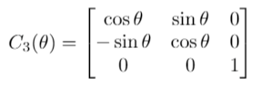
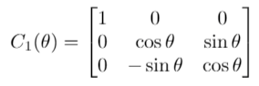
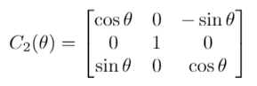

With a third basis vector added to the coordinate frame, the rotation that we performed in the first chapter can now be visualized, not as an abstract rotation, but as a specific rotation around the third axis. In Figure 1, we show both a "left" and a "right"-handed rotation about e3. This can be viewed as putting your thumb in the same direction as axis e3 and the direction your fingers point is the way a "positive" rotation will occur.
The mathematical representation of this rotation is very similar to what we had in 2-D, namely:

Note that this represents a "right"-handed rotation about the z axis.1 It is also denoted as C3 to show that we are rotating about the third axis.
If, instead, we wanted to rotate about a different axis, we could follow a very similar pattern, namely:
Rotation about x:

Rotation about y:

There is a pattern to these matrices that is worth discussing. First, the axis which is being rotated about has a column and row with two 0s and one 1. So, equations (2), (3), and (1) represent (right-handed) rotations around the x, y, and z axes, respectively. Second, because these are right-handed rotations, the row right after the axis being rotated over has the positive sin θ term, and the line after that has the negative term. For Equations (2) and (1) this is easy to see. For Equation (3), note that the 3rd row comes after the y row, and it has a positive sin θ term, while the first row (following the third row) has the − sin θ value.
Tying back into chapter one, note that all of these rotations are assumed to be reference frame rotations and not object rotations. If they were object rotations, the rows following the axis being rotated around would have - sin values.
Right-handed rotations are the standard, for reasons that will be discussed later.